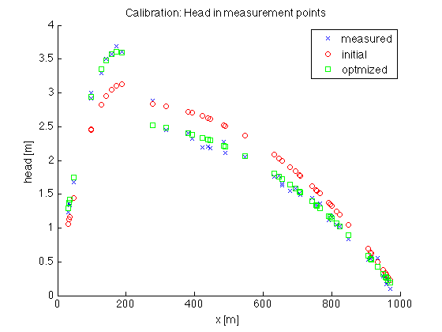

Simple calibration of a 1D analytic model
TO May 2013
Contents
- Intro
- Parameters used in the calibration
- Initial parameter values and perturbations
- Change of default of model parameters, add any (see model for possible parameters
- Number of observations and measurement locatons
- Initial parameter vectors, usage above determines which ones are used.
- Generate synthetic measurements
- Offset from true parameters (implemented in terms of multiplyers
- True parameters that will make the model equal to the measurements
- True model without random errors
- Add synthetic random errors to yM if necessary
- Initial parameters and model outcome
- Sensitivities computation (Jacobian)
- perturbation of model parameter values
- Compute Jacobian matrix (sensitivities)
- Optimal update of initial parameters
- Show results for comparison
- Covariance matrix and other statistics
- Display results
- Issue results for the parameters in readable format
- The next step
Intro
The model is a 1D steady state phreatic head between two ditches at distance L. We have a fixed head in the ditches. The conductivity is kL between xL<alpha*L and kR voor x>alpha*L. The bottom of the aquifer is at zB = -13. Free parameters are kL kR alpha and zB.
We set up a calibration from scratch. Linearizing the relatin between model parameters and the outcomes at measurement locations and then updating the parameter vector such that we get a good fit between model and measurements. We use one step only. In this case we get generally a good fit. Clearly, because the relation between model parameters and heads is non-linear, we should repeat this procedure several times in real-world situation. Whether we reach a minimum or not, depends on the shape of the cost function and the method that is applied to reach such a minimum. The Marqardt-Levenber methed is the most applied non-linear search method, which is a weighted mix of steepest decend and the method shown here using the linearization and solving for the parameter vector update. The Marquardt-Levenberg methods is implemented in the Matlab function lsqnonlin (least squares non linear). This method is used in the other script called CalibNonLin in this same directory. It uses parObj to define parameters and is quite generic, so that with little effort much more complicated models may be calibrated.
In the current file we use a simple approach, with no fancy objects, so that every step is transparent.
% TO 130619 clear variables
Parameters used in the calibration
usage = [ 1 0 1 1 ]; % set to 0 to switch off and 1 to switch on parname = {'kL','kR','alpha','zB'}; % the switches pertain to these parameters use = usage~=0; % Use is now a logical array telling which of the parmeters % will be calibrated and which not.
Initial parameter values and perturbations
kL = 1; dkL = 0.05*kL; kR = 20; dkR = 0.05*kR; alpha = 0.25; da = 0.05*alpha; zB = -10; dzB = 0.05*zB;
Change of default of model parameters, add any (see model for possible parameters
L = 1000;
defaults = {'L',L};
Number of observations and measurement locatons
Np = 50;
xM = unique(L * rand(Np,1)); % random locations between 0 and L
Initial parameter vectors, usage above determines which ones are used.
p0 =[kL kR alpha zB]'; % initial paramter vector dp0 =[dkL dkR da dzB]; % change applied to compute sensitivity (Jacobian)
Generate synthetic measurements
The measurements are generated using the model in "model.m" with its parameters a bit offset from the "true" parameters and with random errors added.
Offset from true parameters (implemented in terms of multiplyers
off_kL =-0.2*kL; off_kR = 0.2*kR; off_alpha = 0.2*alpha; off_zB = 0.0*zB;
True parameters that will make the model equal to the measurements
pTrue = [kL+off_kL,kR+off_kR,alpha+off_alpha,zB+off_zB]';
True model without random errors
yM = model('xM',xM,'kL',kL+off_kL,'kR',kR+off_kR,'alpha',alpha+off_alpha,'zB',zB+off_zB,defaults{:});
Add synthetic random errors to yM if necessary
try % try to load random errors (to keep them the same all the time) load randErrors if numel(yM)~=numel(randErrors) error('Generating random errors'); end fprintf('Random errors loaded.\n'); catch ME % renew random errors fprintf('%s\nGenerating and saving random errors.',ME.message); randErrors = 0.05*randn(size(yM)); save randErrors randErrors; end % simulated measurements yM = yM + randErrors;
Random errors loaded.
Initial parameters and model outcome
The initial parameters for the calibration were given above. We have at most 4 parameters in this model kL kR alpha and zB. The active ones are selected with the usage near the top of this file.
Sensitivities computation (Jacobian)
% Model outcome for initial parameters y0= model('xM',xM,'kL',kL,'kR',kR,'alpha',alpha,'zB',zB,defaults{:});
perturbation of model parameter values
Run model for all parameters in turn with a small value change
sp= [
model('xM',xM,'kL',kL+dkL,'kR',kR,'alpha',alpha,'zB',zB,defaults{:}),... % par1
model('xM',xM,'kL',kL,'kR',kR+dkR,'alpha',alpha,'zB',zB,defaults{:}),... % par2
model('xM',xM,'kL',kL,'kR',kR,'alpha',alpha+da,'zB',zB,defaults{:}),... % par3
model('xM',xM,'kL',kL,'kR',kR,'alpha',alpha,'zB',zB+dzB,defaults{:}) % par4
];
Compute Jacobian matrix (sensitivities)
J = bsxfun(@rdivide,bsxfun(@minus,sp(:,use),y0),dp0(use));
Optimal update of initial parameters
Inv = (J'*J)^(-1); B = Inv*J'; dp = B *(yM-y0); % dp = (J'*J)^(-1)*J' * (yM-y0) y = y0+J*dp; % end results, initial + update through parameter change p = p0(use)+dp; % end results for parameters
Show results for comparison
fsz = 14; % fontsize used in plot figure; axes('nextplot','add','fontsize',fsz); xlabel('x [m]','fontsize',fsz); ylabel('head [m]','fontsize',fsz); title('Calibration: Head in measurement points','fontsize',fsz); plot(xM,yM,'bx'); % model measured data plot(xM,y0,'ro'); % model initial parameters plot(xM,y ,'gs'); % model optimized parameters legend('measured','initial','optmized');
Covariance matrix and other statistics
e = (yM-y); % heads errors, measured - computed sigma = std(e); % errors in heads after calibration Cov = sigma^2*Inv; % covariance matrix of the parameters sigmaP = sqrt(diag(Cov)); % std of the parameters uncert = 100*sigmaP./abs(p); % uncertainty Cor = Cov./(sigmaP*sigmaP'); % correlation matrix of the parameters
Display results
display(Cov); display(Cor);
Cov =
0.0057 0.0006 0.0119
0.0006 0.0001 0.0007
0.0119 0.0007 0.0442
Cor =
1.0000 0.7070 0.7495
0.7070 1.0000 0.2942
0.7495 0.2942 1.0000
Issue results for the parameters in readable format
fprintf('results: error = %.4g m\nUncertainty = 100*sigmaP/abs(p)\n',sigma); fprintf('%10s%10s%10s%10s%10s%10s\n','parameter','pTrue','pInit','pEnd','sigmaP','uncert%'); k=0; for i=find(use) k=k+1; fprintf('%10.4s',parname{i}); fprintf('%10.4g',pTrue(i)); fprintf('%10.4g',p0(i)); fprintf('%10.4g',p(k)); fprintf('%10.4g',sigmaP(k)); fprintf('%10.4g',uncert(k)); fprintf('\n'); end
results: error = 0.1504 m
Uncertainty = 100*sigmaP/abs(p)
parameter pTrue pInit pEnd sigmaP uncert%
kL 0.8 1 0.5941 0.07541 12.69
alph 0.3 0.25 0.3276 0.01181 3.606
zB -10 -10 -11.58 0.2103 1.816
The next step
the next step is to change the initial parameters into the correct direction This is done in mfCalib, using Matlab's lsqnonlin solver.